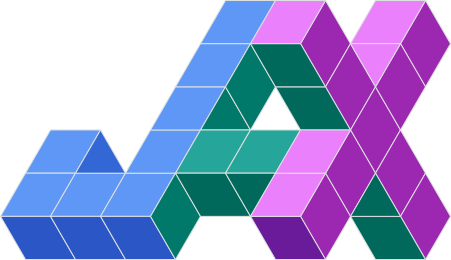

<!DOCTYPE html>
<html lang="en">
<head>
    <meta charset="utf-8">
    <meta name="viewport" content="width=device-width, initial-scale=1.0">
    <title>Rafi's Online Resume</title>
    <link rel="preconnect" href="https://fonts.googleapis.com">
    <link rel="preconnect" href="https://fonts.gstatic.com" crossorigin>
    <link href="https://fonts.googleapis.com/css2?family=Quicksand:wght@300..700&display=swap" rel="stylesheet">
    <link rel="stylesheet" href="./style.css">
</head>
<body>
    <div id="root"></div>

    <script src="https://cdnjs.cloudflare.com/ajax/libs/react/18.2.0/umd/react.development.js"></script>
    <script src="https://cdnjs.cloudflare.com/ajax/libs/react-dom/18.2.0/umd/react-dom.development.js"></script>
    <script src="https://cdnjs.cloudflare.com/ajax/libs/babel-standalone/7.23.2/babel.min.js"></script>

    <script type="text/babel">
        function App() {
            const [activeView, setActiveView] = React.useState("about");

            const projectItems = [
                {
                    title: "Food.com EDA",
                    repoUrl: "https://food-recipe-eda.vercel.app/",
                    imageUrl: "https://raw.githubusercontent.com/salirafi/Food-Recipe-EDA/main/figures/home_page.png",
                    caption: "An interactive dashboard uncovering unique insights from Food.com’s recipe dataset. Explore the patterns in ingredients, nutrition, and user behavior through rich, data-driven analysis."
                },
                {
                    title: "SteamRec",
                    repoUrl: "https://steam-rec.vercel.app/",
                    imageUrl: "https://raw.githubusercontent.com/salirafi/SteamRec/main/figures/home_page.png",
                    caption: "A recommender system for the popular game store Steam that provides personalized game recommendations based on user preferences and behavior."
                },
                {
                    title: "HeatRisk",
                    repoUrl: "https://jakarta-heat-risk-app.vercel.app/",
                    imageUrl: "https://raw.githubusercontent.com/salirafi/HeatRisk/main/figures/main_page.png",
                    caption: "An interactive application that visualizes heat risk in Jakarta, providing insights into heat index patterns and potential risk areas."
                },
                {
                    title: "More on the progress!",
                    repoUrl: "",
                    imageUrl: "",
                    caption: ""
                },
            ];

            const visualizationImages = [
                "static/windrose.png",
                "static/pvalue.jpg",
                "static/p1.png",
                "static/p2.png",
                "static/p3.png",
                "static/p4.png",
                "static/kp-vsys.jpg",
                "static/ternary.png",
            ];

            const navItems = [
                { id: "about", label: "About Me" },
                { id: "education", label: "Education & Experience" },
                { id: "projects", label: "Projects" },
                { id: "publications", label: "Publications & Conferences" },
                { id: "misc", label: "Miscellaneous" }
            ];

            function renderView() {
                if (activeView === "about") {
                    return (
                        <div className="section-stack">
                            <section className="content-section">
                                <p className="section-label">About Me</p>
                                <p>
                                    Hi, I'm Rafi!
                                </p>
                                <p>
                                    I am a data professional with a strong academic foundation in astrophysics, holding a magna cum-laude B.Sc. from Institut Teknologi Bandung 
                                    and a summa cum-laude M.Sc. from the University of Tokyo. 
                                    I have over six years of research experience centered on extracting meaningful signals from high-dimensional, 
                                    high-noise astronomical observational datasets which spanned the full ETL and analytical pipeline. 
                                    Beyond research, my personal projects include various data-driven builds and analyses, covered in <a href="#" onClick={(e) => { e.preventDefault(); setActiveView("projects"); }}>Projects</a>.
                                    I am technically proficient in {" "}
                                    <span className="inline-tech-item">Python</span> and {" "}
                                    <span className="inline-tech-item">R</span> for data analysis, statistical modeling, and visualization, 
                                    with working knowledge of {" "}<span className="inline-tech-item">SQL</span> and 
                                    machine learning frameworks using {" "}<span className="inline-tech-item">JAX</span> and 
                                    {" "}<span className="inline-tech-item">TensorFlow</span>. 
                                </p>
                                <p>
                                    I work methodically, going deep into a problem before drawing conclusions, a habit built from years of scientific research where rigor is non-negotiable. 
                                    In teams, I tend to be the person who digs into the data and translates the findings into something the rest of the team can act on. 
                                    I also have experience communicating technical work to general audiences through {" "}
                                    <a href="#" onClick={(e) => { e.preventDefault(); setActiveView("publications"); }}>Science Communication and Conference  Work</a>.
                                </p>
                                <p>
                                    I am currently transitioning from academic research into industry, targeting data-related roles. 
                                    My research background has given me a strong technical foundation, but I am ready to take it into new territory by applying the same analytical depth 
                                    to a broader range of domains and real-world problems beyond astrophysics. 
                                    I am also drawn to the kind of collaborative, team-based environment that industry offers, where work is more directly tied to concrete outcomes. 
                                </p>
                            </section>

                            <section className="content-section">
                                <p className="section-label">Skills</p>
                                <h3>Core strengths and tools</h3>
                                <div className="skill-list">
                                    <span>Data Analysis</span>
                                    <span>Machine Learning</span>
                                    <span>Data Visualization</span>
                                    <span>Statistical Thinking</span>
                                    <span>Research Communication</span>
                                </div>
                                <p>
                                    Programming languages (proficient → working knowledge): 
                                    {" "}
                                    <span className="inline-tech-item">Python</span>,
                                    {" "}
                                    <span className="inline-tech-item">R</span>,
                                    {" "}
                                    <span className="inline-tech-item">SQL</span>,
                                    {" "}
                                    <span className="inline-tech-item">Git</span>,
                                    {" "}
                                    <span className="inline-tech-item">HTML</span>,
                                    {" "}
                                    <span className="inline-tech-item">JavaScript</span>
                                </p>
                                <p>
                                    Visualization tools: 
                                    {" "}
                                    <span className="inline-tech-item">Matplotlib</span>,
                                    {" "}
                                    <span className="inline-tech-item">Plotly</span>,
                                    {" "}
                                    <span className="inline-tech-item">PowerPoint</span>,
                                    {" "}
                                    <span className="inline-tech-item">Tableau</span> (basic knowlegde)
                                </p>
                                <p>
                                    Languages: Indonesian (native), English (fluent, TOEFL iBT 104), Japanese (basic)
                                </p>
                            </section>
                        </div>
                    );
                }

                if (activeView === "education") {
                    return (
                        <div className="section-stack two-up">

                            <section className="content-section">
                                {/* <p className="section-label">Experience</p> */}
                                <h3>Experience</h3>
                                <p>I have never engaged with any related prior full-time work. Others include:</p>
                                <div className="timeline-item">
                                    <h4>
                                        Research Assistant  
                                    </h4>
                                    <p>Earthquake Research Institute, The University of Tokyo | 2023-2026</p>
                                    <ul className="detail-list">
                                        <li>Helped maintain the institute's seismic database which stores satellite data of seismic wave from all earthquakes worldwide recorded by sensors throughout Japanese islands.</li>
                                        <li>Helped make and write the content of Newsletter Plus Digest, a newsletter issue reporting the research activities and findings of the institute. </li>

                                    </ul>
                                </div>
                                <div className="timeline-item">
                                    <h4>
                                        Teaching Assistant  
                                    </h4>
                                    <p>Department of Astronomy, The University of Tokyo | 2023-2024</p>
                                    <ul className="detail-list">
                                        <li>Helped structuring course materials, evaluating reports, and assisting in classroom sessions for master's students.</li>
                                        <li>Helped maintain department website, including updating member information and event news.</li>
                                        <li>Organized biweekly seminars and workshops for students and faculty members.</li>

                                    </ul>
                                </div>
                                <div className="timeline-item">
                                    <h4>
                                        Intern 
                                    </h4>
                                    <p>National Institute of Aeronautics and Space (LAPAN), now BRIN | 2020-2021</p>
                                    <ul className="detail-list">
                                        <li>Developed atmospheric prediction models using state-of-the-art technique, 
                                            providing accurate and high-resolution stratospheric oxygen and carbon dioxide vertical abundances for the next 48 hours for Indonesia region.</li>
                                        
                                    </ul>
                                </div>
                                <div className="timeline-item">
                                    <h4>
                                        Member of Information and Publication Media Division
                                    </h4>
                                    <p>Persatuan Pelajar Indonesia di Jepang (PPIJ) | 2022-2023</p>
                                    <ul className="detail-list">
                                        <li>Helped make and write the content of Majalah Interaksi PPI Jepang, 
                                            a quarterly magazine on everything about life in Japan and its scientific and socio-economic research. </li>
                                        <li>Helped organize online seminars and workshops with prominent figures in related research, including the Indonesian Ambassador to Japan, for public engagement and knowledge sharing.</li>
                                    </ul>
                                </div>
                                <div className="timeline-item">
                                    <h4>Staff and Head of Internal Relations Division</h4>
                                    <p>Himpunan Mahasiswa Astronomi (HIMASTRON) ITB | 2019-2021</p>
                                    <ul className="detail-list">
                                        <li>Successfully retained positive engagement between association members during the COVID-19 era by creating a creative, interactive, and fun online platform for interaction and collaboration.</li>
                                    </ul>
                                </div>
                                <div className="timeline-item">
                                    <h4>Staff of Documentation and Publication Division</h4>
                                    <p>Unit Bulu Tangkis (UBT) ITB | 2018-2019</p>
                                    <ul className="detail-list">
                                        <li>Documented and published event activities and achievements of the division.</li>
                                        <li>Maintained records and archives for future reference and reporting.</li>
                                    </ul>
                                </div>
                            </section>

                            <section className="content-section">
                                {/* <p className="section-label">Education</p> */}
                                <h3>Academic background</h3>
                                <div className="timeline-item">
                                    <h4>Master of Science (M. Sc.) | since 2023</h4>
                                    <p>The University of Tokyo, Tokyo, Japan.</p>
                                    <p>Graduate program in Astronomy major with a focus on observational data modeling and analysis with state-of-the-art technique and instrument. 
                                        Graduated with perfect GPA 4.00/4.00.</p>
                                </div>
                                <div className="timeline-item">
                                    <h4>Bachelor of Science (B. Sc.) | since 2021</h4>
                                    <p>Institute Teknologi Bandung (ITB), Bandung, Indonesia.</p>
                                    <p>Undergraduate program in Astronomy major with a focus on computational modeling and analysis of archival data. 
                                        Graduated with GPA 3.78/4.00.</p>
                                </div>
                            </section>
                        </div>
                    );
                }

                if (activeView === "projects") {
                    return (
                        <section className="section-stack">
                            <section className="content-section">
                                <p className="section-label">Projects</p>
                                <h2>Personal Projects</h2>
                                <p>
                                    Some of my work is captured in the projects I build for fun, which are data-driven in nature.
                                    These projects are a space for me to apply my skills to topics that interest me, and to experiment with new tools and techniques. 
                                    
                                </p>
                            </section>

                            <div className="projects-grid">
                                {projectItems.map((project) => ( 
                                    project.title === "More on the progress!" ? (
                                        <div className="project-title">
                                            <h3>{project.title}</h3>
                                        </div>
                                    ) : (
                                    <a
                                        key={project.title}
                                        className="project-tile"
                                        href={project.repoUrl}
                                        target="_blank"
                                        rel="noreferrer"
                                    >
                                        <h3>{project.title}</h3>
                                        <div className="project-image-wrap">
                                            
                                        </div>
                                        <p>{project.caption}</p>
                                    </a>
                                )))}
                            </div>

                            <h2> My DataViz Examples </h2>

                            <div className="viz-collage" aria-label="Data visualization examples">
                                {visualizationImages.map((imageUrl, index) => (
                                    
                                ))}
                            </div>
                        </section>
                    );
                }

                if (activeView === "publications") {
                    return (
                        <div className="section-stack two-up">
                            <section className="content-section">
                                <p className="section-label">Conferences</p>
                                <h3>Peer-reviewed Talks and Presentations</h3>
                                <div className="timeline-item">
                                    <p> <strong>Rafi, S. A.</strong>, Nugroho, S. K., Fujii, Y., Hirano, T., Nortmann, L., & Sánchez-López, A., Tamura, M. (2025). 
                                        <em> The Power and Pitfalls of High-Resolution Spectroscopy: HD 149026 b’s Atmosphere and
                                        Telluric Correction Techniques </em>
                                        Poster presentation #29, EXOCLIMES VII, Montreal, Canada. 
                                        <a href="https://exoclimes.org/program.html#program" target="_blank" rel="noreferrer"> 
                                        [https://exoclimes.org/program.html#program]</a></p>
                                    <p> Nugroho, S. K., de Mooij, E., Gibson, N., Parmentier, V., Owens, N., Maguire, C., Kawahara, H., 
                                        Wardenier, J., Kawashima, Y., Hirano, T., Kuzuhara, M., Kotani, T., Masuda, K., Watson, C., 
                                        Ramkumar, S., <strong>Rafi, S. A.</strong>, Nakajima, T., & Tamura, M. (2025). 
                                        <em> The Transmission Spectrum of KELT-20b with HDS/Subaru and GRACES/Gemini-N: New Detections and the Fe I Double-Peak Mystery </em>
                                        Oral presentation PAE18-07, Japan Geoscience Union Meeting 2025, Chiba, Japan. 
                                        <a href="https://confit.atlas.jp/guide/event/jpgu2025/subject/PAE18-07/crosssearch" target="_blank" rel="noreferrer"> 
                                        [https://confit.atlas.jp/guide/event/jpgu2025/subject/PAE18-07/crosssearch]</a></p>
                                    <p><strong>Rafi, S. A.</strong>, Nugroho, S. K., Fujii, Y., Hirano, T., Tamura, M. (2025) <em> Telluric Correction with Forward Modeling 
                                        for Exoplanet Atmosphere Characterization using High-resolution Spectroscopy </em>
                                        Oral presentation PAE18-10, Japan Geoscience Union Meeting 2025, Chiba, Japan. 
                                        <a href="https://confit.atlas.jp/guide/event/jpgu2025/subject/PAE18-10/crosssearch" target="_blank" rel="noreferrer"> 
                                        [https://confit.atlas.jp/guide/event/jpgu2025/subject/PAE18-10/crosssearch]</a></p>
                                    <p> Nugroho, S. K., de Mooij, E., Gibson, N., Kawahara, H., Parmentier, V., Hirano, T., 
                                        Kuzuhara, M., Brogi, M., Birkby, J., Tamura, M., Kawashima, Y., Kotani, T., Masuda, K., Watson, C., Zwintz, K., & 
                                        <strong> Rafi, S. A.</strong> (2023). 
                                        <em> Unlocking the Chemical Composition of Ultra Hot Jupiters: A NIR High-Resolution Emission Spectroscopy Study of WASP-33b </em>
                                        Oral presentation PEM11-03, Japan Geoscience Union Meeting 2023, Chiba, Japan. 
                                        <a href="https://confit.atlas.jp/guide/event/jpgu2023/subject/PEM11-03/advanced" target="_blank" rel="noreferrer"> 
                                        [https://confit.atlas.jp/guide/event/jpgu2023/subject/PEM11-03/advanced]</a></p>
                                    <p><strong>Rafi, S. A.</strong>, Nugroho, S. K., Tamura, M., Nortmann, L., & Sánchez-López, A. (2023). <em> Shifted hot-spot in the 
                                        Ultra Hot-Jupiter WASP-33 b - A Sign of Atmospheric Dynamics. </em>
                                        Poster presentation ES-02-0009, Protostars and Planets VII, Kyoto, Japan.
                                        <a href="https://ppvii.org/list-of-participants/index.html" target="_blank" rel="noreferrer">  
                                        [https://ppvii.org/list-of-participants/index.html]</a></p>
                                    <p><strong>Rafi, S. A.</strong>, Nugroho, S. K., Tamura, M. (2023). <em> Unveiling the Atmosphere
                                        of a Hot-Saturn: Detection of Water Vapor in HD 149026 b with High-Resolution Spectroscopy. </em>
                                        Oral presentation PEM11-04, Japan Geoscience Union Meeting 2023, Chiba, Japan. 
                                        <a href="https://confit.atlas.jp/guide/event/jpgu2023/subject/PEM11-04/advanced" target="_blank" rel="noreferrer"> 
                                        [https://confit.atlas.jp/guide/event/jpgu2023/subject/PEM11-04/advanced]</a></p>
                                    <p><strong>Rafi, S. A.</strong>, Nugroho, S. K., Tamura, M. (2023). <em> Unveiling the Atmosphere
                                        of a Hot-Saturn: Detection of Water Vapor in HD 149026 b with High-Resolution Spectroscopy. </em>
                                        Oral presentation #32, Asia-Pacific Regional IAU Meeting 2023, Koriyama, Japan.
                                        <a href="https://aprim2023.org/index.html%3Fp=70.html" target="_blank" rel="noreferrer">  
                                        [https://aprim2023.org/index.html%3Fp=70.html]</a></p>
                                </div>
                            </section>
                            <section className="content-section">
                                <p className="section-label">Publications</p>
                                <h3>Peer-reviewed</h3>
                                <div className="timeline-item">
                                    <p><strong>Rafi, S. A.</strong>, Nugroho, S. K., Tamura, M., Nortmann, L., & Sánchez-López, A. (2024).  
                                        <em> Evidence of water vapor in the atmosphere of a metal-rich hot Saturn with high-resolution transmission spectroscopy. </em>
                                        The Astronomical Journal, 168, 106.
                                        <a href="https://iopscience.iop.org/article/10.3847/1538-3881/ad5be9" target="_blank" rel="noreferrer"> 
                                            [https://doi.org/10.3847/1538-3881/ad5be9]</a>
                                    </p>
                                </div>
                            </section>
                        </div>
                    );
                }

                return (
                    <section className="section-stack">
                        <section className="content-section">
                            <p className="section-label">Miscellaneous</p>
                            <h3>Beyond formal work</h3>
                            <p>
                                I love to play video games, especially competitive and 4X strategy ones. Add me on Steam if you have similar taste! 
                            </p>
                            <p>
                                I also enjoy cooking and baking. While I wouldn’t call myself particularly skilled 🙂, I find it a rewarding way to relax and unwind after a long day.
                            </p>
                        </section>
                    </section>
                );
            }

            return (
                <div className="page-shell">
                    <main className="site-layout">
                        <aside className="left-column">
                            <div className="profile-picture">
                                
                            </div>

                            <div className="personal-info">
                                <p className="small-label">Online Resume</p>
                                <h1>
                                    <span className="name-top">Sayyed Ali</span>
                                    <span className="name-bottom">Rafi</span>
                                </h1>
                                <p className="tagline">Data Enthusiast</p>
                                <p className="summary">
                                    Turning messy information into clear insight and useful
                                    real-world decisions.
                                </p>
                            </div>

                            <section className="looking-for-section">
                                <h2>Looking For</h2>
                                <p>
                                    Data-related roles, including but not limited to Data Analyst, Data Scientist, Data Engineer, Product Analyst, BI Analyst.
                                </p>
                            </section>

                            <section className="contact-section">
                                <h2>Contact</h2>
                                <ul className="contact-list">
                                    <li>
                                        </img>
                                        <a href="tel:+6281296926125">+62 812 9692 6125</a>
                                    </li>
                                    <li>
                                        </img>
                                        <a href="https://www.linkedin.com/in/sayyed-ali-rafi-184462114/" target="_blank" rel="noreferrer">
                                            Sayyed Ali Rafi
                                        </a>
                                    </li>
                                    <li>
                                        </img>
                                        <a href="https://github.com/salirafi" target="_blank" rel="noreferrer">
                                           salirafi
                                        </a>
                                    </li>
                                    <li>
                                        </img>
                                        <a href="mailto:salirafi8@gmail.com">salirafi8@gmail.com</a>
                                    </li>
                                    <li>
                                        </img>
                                        <span>Jakarta, Indonesia</span>
                                    </li>
                                </ul>
                            </section>
                        </aside>

                        <section className="right-column">
                            <header className="top-bar">
                                <div className="nav-links" role="tablist" aria-label="Resume sections">
                                    {navItems.map((item, index) => (
                                        <React.Fragment key={item.id}>
                                            <button
                                                type="button"
                                                className={item.id === activeView ? "nav-pill active" : "nav-pill"}
                                                onClick={() => setActiveView(item.id)}
                                            >
                                                {item.label}
                                            </button>
                                            {index < navItems.length - 1 ? (
                                                <span className="nav-separator" aria-hidden="true">|</span>
                                            ) : null}
                                        </React.Fragment>
                                    ))}
                                </div>
                            </header>

                            <div className="view-shell">
                                {renderView()}
                            </div>
                        </section>
                    </main>
                </div>
            );
        }

        const root = ReactDOM.createRoot(document.getElementById("root"));
        root.render(<App />);
    </script>
</body>
</html>
